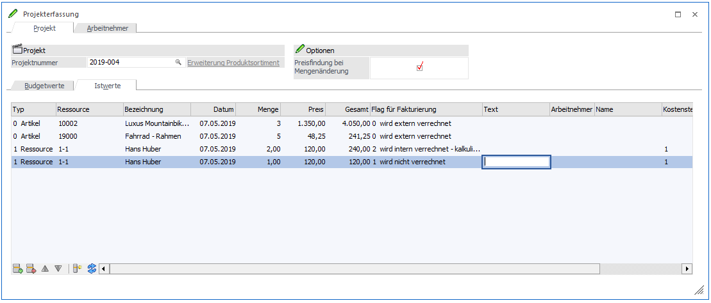
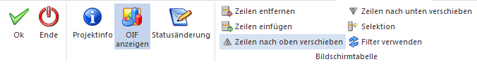

Die Erfassung der Ist-Zeiten erfolgt im Menüpunkt…
1 Erfassen
1 Projektverwaltung
1 Projekterfassung

Hier erfolgt die Erfassung des Materials (Artikel) und der Ressourcen (diese werden in der WinLine PPS angelegt). Im rechten Bereich kann die Anzeige des OIF erfolgen: Basis OIF-Element für Projekte und für Artikel.
Ø Checkbox Preisfindung für Mengenänderung
Die Checkbox ist im Standard aktiviert. Beim Editieren der Menge wird eine Preisfindung für den erfassten Artikel vorgenommen. Die Einstellung wird benutzerspezifisch gespeichert. Bei der Preisfindung werden die Rabatte beim Preis nicht berücksichtigt.
Die weitere Verrechnung bzw. Bearbeitung der Istwerte ist abhängig vom gesetzten Flag:
Ø Flag für Fakturierung
Werden Istzeiten erfasst, können pro Zeile die folgenden Optionen gesetzt werden:
ü 0 - wird extern
verrechnet
Können im Menüpunkt Projekt einlesen in einen Beleg zur
Fakturierung übergeben werden.
ü 1 - wird intern
verrechnet
Können ebenfalls im Menüpunkt Projekt einlesen in einen Beleg
übergeben werden, allerdings mit Preis 0.
ü 2 - wird intern verrechnet -
kalkulierter Aufwand
Diese Zeilen werden beim Soll-Ist Vergleich mit
ausgegeben. Über den Menüpunkt Projekt einlesen können die Artikel auch
automatisch vom Lager abgebucht werden.
ü 3 - wird intern verrechnet -
außerordentlicher Aufwand
Werden bei den Istkosten separat ausgewiesen. Über
den Menüpunkt Projekt einlesen können die Artikel auch automatisch vom Lager
abgebucht werden.
Buttons

Ø OK
Mit dem Button „Ok“ werden die Eingaben gespeichert.
Ø Ende
Mit dem Button „Ende“ wird die Projekterfassung ohne Speicherung beendet.
Ø Projektinfo
Mit dem Button „Projektinfo“ wird die Projektauswertung am Bildschirm angezeigt.
Ø OIF anzeigen
Mit Hilfe des Buttons wird das Basis OIF-Element für Projekte und für Artikel angezeigt. Die Aktivierung der Anzeige wird benutzerabhängig pro Mandant gespeichert.
Ø Statusänderung
Mit diesem Button wird die „Statusänderung“ aufgerufen. Hierüber kann der jeweilige Projektstatus (Pre-Sales bzw. Post-Sales) erfasst bzw. geändert werden. Mehr Informationen dazu erhält man im Kapitel Erfassen -Projektverwaltung - Statusänderung.
Buttons der Bildschirmtabelle
Ø Zeilen entfernen
Nach dem Markieren einer Zeile kann diese - mit Hilfe des Buttons - gelöscht werden.
Ø Zeilen einfügen
Nach dem Markieren einer Zeile kann - mit Hilfe des Buttons - eine neue Zeile oberhalb der markierten Zeile eingefügt werden.
Ø Zeilen nach oben verschieben
Nach dem Markieren einer Zeile kann diese - mit Hilfe des Buttons - nach oben verschoben werden.
Ø Zeilen nach unten verschieben
Nach dem Markieren einer Zeile kann diese - mit Hilfe des Buttons - nach unten verschoben werden.
Ø Selektion
Es kann eine Selektion vorgenommen werden, die die Anzeige begrenzt und damit übersichtlicher gestaltet. Man kann dabei das Datum (von - bis) und/oder einen Arbeitnehmer selektieren.
Ø Filter verwenden
Wird der Button "Filter verwenden" aktiviert, erfolgt eine eingrenzte Anzeige der Tabelleninhalte. Als Grundlage wird die in der „Selektion“ vorgenommene Einstellung herangezogen. Die Einstellung des Filters wird benutzerabhängig pro Mandant gespeichert und verwendet. Ist der Filter aktiviert wird dieses unterhalb der Tabelle zur Information angezeigt.
Ø Belegzeile kopieren
Durch Anwahl des Buttons "Belegzeile kopieren" werden die markierten Belegzeilen in den Zwischenspeicher gelegt und stehen für den Button "Belegzeilen einfügen" zur Verfügung.
Ø Belegzeile einfügen
Durch Anwahl des Buttons "Belegzeile einfügen" werden die zuvor kopierten Zeilen eingefügt.